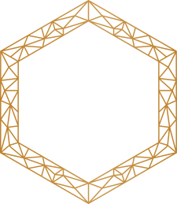

Working library · Studio archive
Innovation LabsArtifact Index
Everything we’ve built, explored and documented. In one place.
A curated library of what exists, what kind of thing it is, what it is for and where to open it.

Selected
A few places to start.
A handful of entries from across the work. The full registry is below.
Library
The full registry.
Grouped by what the work is about. Filter by kind from the ledger above, or by format here.